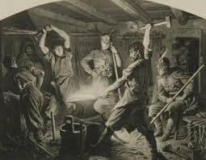
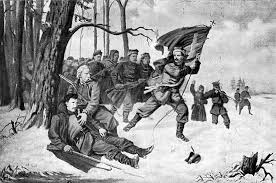
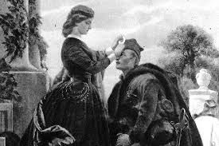

Polskie powstania narodowe
Polskie powstania narodowe

 W przeddzień wybuchu Powstania Styczniowego, na terenach Królestwa Polskiego istniały dwie główne grupy. „Biali” propagowali zjednoczenie całego społeczeństwa i pracę organiczną oraz dążenie do rozszerzania Królestwa. „Czerwoni” natomiast byli zwolennikami powstania zbrojnego przeciw caratowi, by dokonać reform uwłaszczeniowych w wolnej już Polsce. Bezpośrednim powodem wybuchu Powstania Styczniowego była tzw. branka, czyli przymusowy pobór do carskiego wojska (chciano powołać do wojska działaczy opozycyjnych). W związku z tym utworzono Tymczasowy Rząd Narodowy, który wybrał Ludwika Mierosławskiego na dyktatora. 22 I 1863 roku TRN wydał manifest, w którym wzywał Polaków do walki z caratem. Symbolem powstańców było godło symbolizujące Orła, Pogoń i Archanioła, czyli herby Polski, Litwy i Ukrainy. Początek Powstania Styczniowego był sukcesem Polaków, którzy zaskoczyli Rosjan. Ci ukryci w większych miastach oddali prowincję powstańcom. Walki prowadzone były w sposób podjazdowy, wojna miała charakter partyzancki. Duże sukcesy w walce z Rosjanami odnosił na ziemi kieleckiej Marian Langiewicz. Jednak już w lutym miało miejsce wydarzenie dla powstańców bardzo niekorzystne. W Petersburgu podpisano konwencję Alvenslebena, przewidującą współpracę prusko-rosyjską przy zwalczaniu powstańców. Mimo, że początkowo władze powstańcze składały się głównie z Czerwonych, z czasem Biali starali się zyskiwać coraz silniejszą pozycję. Zaczęli oni popierać umiarkowanego Czerwonego, za jakiego był uważany Langiewicz. W wyniku ich działań po wyjeździe Mierosławskiego, Langiewicz został dyktatorem powstania. W tym czasie wojska powstańcze ze zmiennym szczęściem toczyły zażarte walki z oddziałami rosyjskimi. W kwietniu Biali oficjalnie przystąpili do powstania i wkrótce objęli nad nim władzę. W związku z tym powołano składający się z Białych Rząd Narodowy. We wrześniu 1863 roku Czerwoni rozpoczęli akcje terrorystyczne wymierzone w zaborców. W jednym z zamachów zginął namiestnik Królestwa gen. Berg. Następnie w październiku dowódca wojskowy Romuald Traugutt został dyktatorem powstania. Zreorganizował on władze powstańcze i oddziały zbrojne. Jednak ta próba ratowania powstania nie miała już szans powodzenia. Walki prowadzone były na coraz mniejszą skalę, a coraz liczniejsze wojska rosyjskie skutecznie rozbijały oddziały powstańcze. W marcu 1864 roku car Aleksander II wydał ukaz (dekret) o uwłaszczeniu. Miało to odciągnąć chłopów od popierania powstańców. Z drugiej strony zamierzano przez to ukarać szlachtę biorącą udział w Powstaniu Styczniowym (miano odebrać im ziemię i przekazać w ręce chłopów). Działania te odniosły pewien skutek, a siły powstańców stawały się coraz słabsze. Jednym z ostatnich aktów powstania było stracenie Trauguta w Cytadeli 5 VIII 1864 roku. Od kwietnia tego roku dyktatorem powstania był Aleksander Wyszkowski. Jednak pod koniec 1864 roku powstanie ostatecznie upadło.
 Jak tylko Powstanie Styczniowe zostało stłumione Rosjanie rozpoczęli represje. Wiele tysięcy Polaków zostało zesłanych na Syberię, skąd nigdy już nie wrócili. Zniesiono autonomię Królestwa i uczyniono z niego zwykłą prowincję Rosji. Przybrał na sile także proces rusyfikacji. Skonfiskowano wiele majątków szlacheckich, by ukarać szlachtę biorącą czynny udział w powstaniu. Powstanie Styczniowe zakończyło się klęską, jednak pomimo tego i represji wobec Polaków, zaborcom nie udało się złamać w narodzie ducha oporu, czego skutkiem było odzyskanie niepodległości po I wojnie światowej.